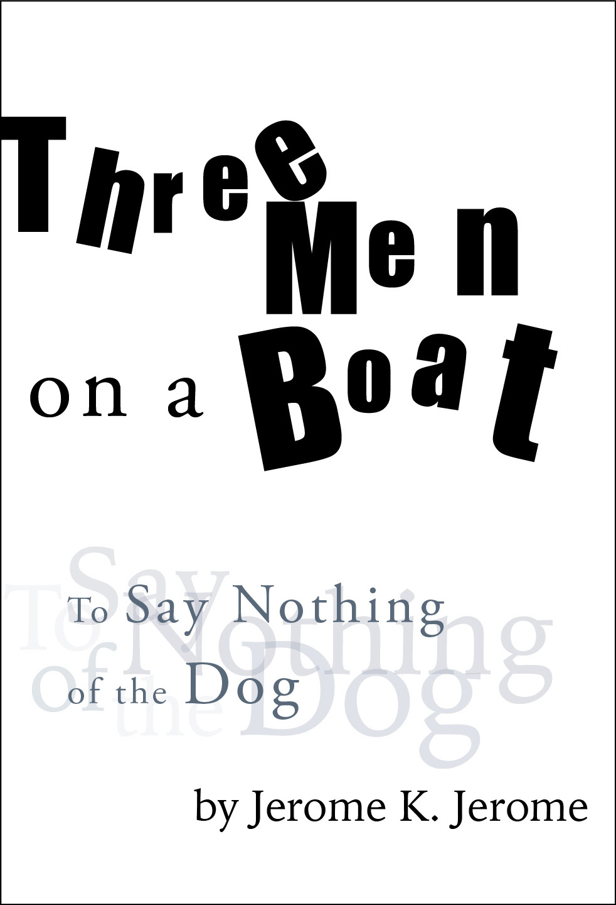
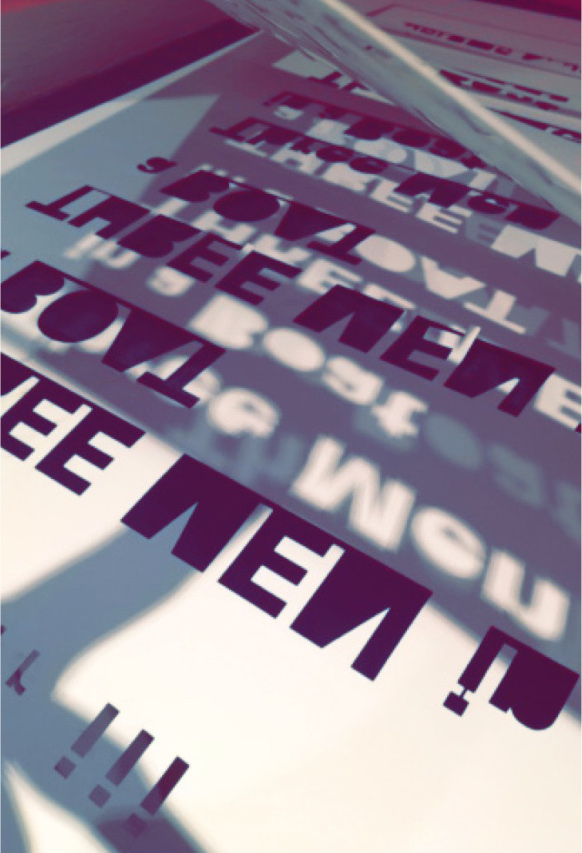
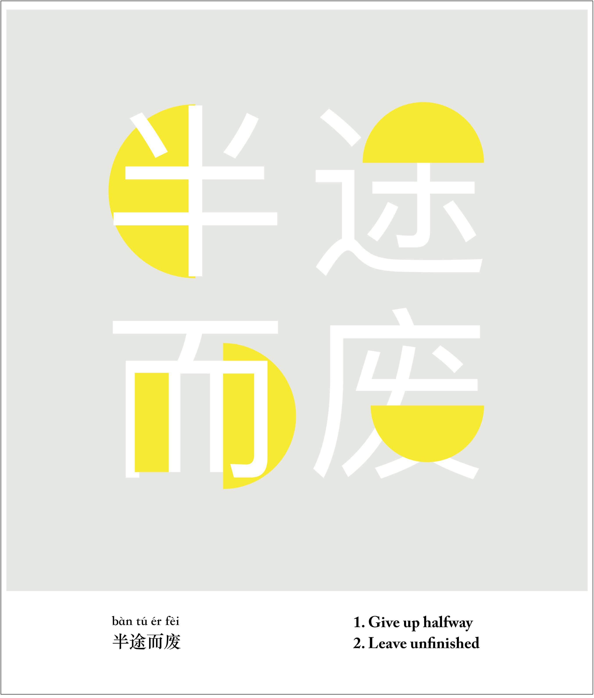
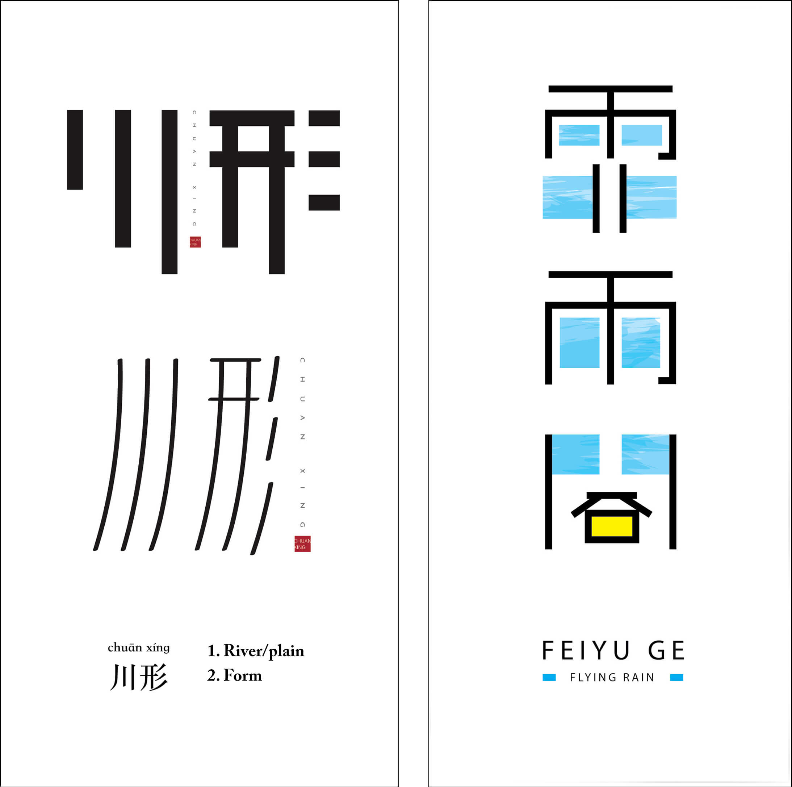

In this "personal design catalogue," I explore 12 things that I "collect" and enjoy, including postcards, teapots, sneakers, and Japanese envelopes known as Pochi Bukuro. In addition to researching and writing about the history of various products, I also did paper selection and coptic binding for my booklet.
The project touched on various areas of design. Through several iterations, I repeatedly practiced designing, binding, photographing, crafting, and more. Thus, my attention to detail and creativity improved as well.
"Three Men in a Boat" Book Cover
"Three Men in a Boat" drafting
"Three Men in a Boat" lazer cutting
Walk half the road
Rivers and rains
